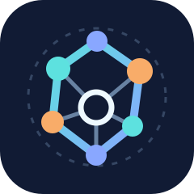

Окремо фіксуються бізнес-джерело та спосіб потрапляння запису в систему.
← До всіх проєктів

CLIENTCIRCUIT / CRMБІЗНЕС-РІШЕННЯ / CRM + CALL CENTER
ClientCircuit
Від першого звернення до клієнтського проєкту: одна історія, зрозуміле походження заявки та безпечна обробка повторних подій.
Що відбувається зі зверненням?
Система з’єднує обробку вхідного ліда з CRM-карткою, задачами та історією. Не переносить робочі бази даних у браузерну демоверсію.
Журнал дзвінків, відповідальний, статус та контроль повторних подій.
Клієнтський профіль, контактні дані, задачі й налаштовувані поля.
Контакти та системні події зберігаються після створення клієнтського проєкту.
Зберігається різниця між джерелом клієнта та технічним каналом надходження.
Ідентифікатор зовнішньої події дозволяє уникати дублювання під час повторної доставки.
Під час перетворення ліда в клієнта не втрачається послідовність попередніх контактів.
Важливо: шлях із вебформи в цьому стенді змодельовано. Наявність робочого контракту не означає, що наскрізне production-підключення зовнішнього сайту вже завершене.
Проблема
Заявки та дзвінки не повинні залишатися ізольованими від клієнтських карток і задач. Інакше після зміни статусу або створення проєкту менеджер втрачає походження контакту та його попередню історію.
Рішення
Розширення існуючої платформи керування задачами CRM-функціями з окремим компонентом Call Center. Лід має джерело, метод надходження та журнал подій. Після конвертації формується клієнтський проєкт із пов’язаною історією.
Реалізовані можливості
- CRM-профіль: контактні особи, адреси, статус, відповідальний та користувацькі поля.
- Історія клієнта: нотатки, дзвінки, зустрічі та автоматичні події задач і змін.
- Call Center: ліди, джерела, журнал дзвінків і запис змін статусу.
- Контракт конвертації ліда в клієнтський проєкт зі збереженням історії та перевіркою повторних подій.
Технічний підхід
Робоча система є модифікацією відкритої платформи Vikunja (Go/Vue) і використовує інтегрований компонент Call Center. Розробка на базі відкритого ПЗ — це розширення та інтеграція, а не написання Vikunja з нуля.
Демонстрація та перевірка
Симулятор вище відтворює навчальний сценарій: вигадана заявка → взаємодія → кваліфікація → клієнт. Повторна доставка повідомлення демонструється без створення другої заявки. Цей браузерний стенд не має API, телефонії або доступу до бойових баз.
Обмеження, походження і приватність
Виробничий код, реальні клієнти, облікові дані та конфігурація сервера не публікуються. ClientCircuit — окрема назва й оригінальний дизайн лише для портфоліо. Джерела: Vikunja та компонент Call Center, похідний від Open Cold Dialer; відповідні ліцензії зберігають чинність. Підключення зовнішньої форми сайту описане окремим контрактом і не заявлене як завершене production-впровадження.